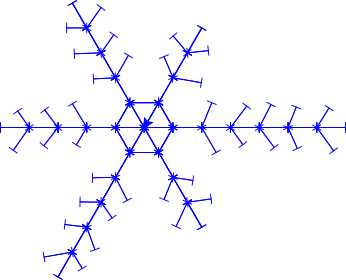

Julekuler, snøflak og speilsymmetri
Contents
Julekuler, snøflak og speilsymmetri#
Den observante leser av Julekuler, snøflak og rotasjonssymmetri (som vi anbefaler at du leser først) har kanskje oppdaget at snøflak ofte har flere typer symmetri enn bare rotasjonssymmetri. Snøflak har nemlig det som heter for speilsymmetri: Hvis vi speiler snøfnugget langs en «gren» vil det ikke endres.
Speilsymmetry#
Naturlandskap reflektert i vann (bilde av Eberhard Grossgasteiger).
Når vi tenger figurer med speilsymmetri kan vi bruke en løkke til å kutte ned antall linjer kode (sånn som vi allerede har gjort for rotasjonssymmetri). Under er koden vi lagde for å tegne et snøfnugg i Julekuler, snøflak og rotasjonssymmetri. Ser vi nøye etter så kan vi se at linje 11-14 og 21-24 er veldig like, men vinklene peker i motsatt retning
1import turtlethread
2
3nål = turtlethread.Turtle()
4with nål.running_stitch(30):
5
6 for arm in range(6):
7 # Gå litt frem
8 nål.forward(90)
9
10 # Tegn første "gren", denne peker litt nedover
11 nål.right(30)
12 nål.forward(60)
13 nål.backward(60)
14 nål.left(30)
15
16 # Gå litt frem og tilbake
17 nål.forward(90)
18 nål.backward(90)
19
20 # Tegn andre "gren", denne peker litt oppover
21 nål.left(30)
22 nål.forward(60)
23 nål.backward(60)
24 nål.right(30)
25
26 # Gå tilbake til start
27 nål.backward(90)
28
29 # Roter 60 grader mot høyre for å tegne seks grener
30 nål.right(60)
31
32nål.visualise()

For å utnytte speilsymmetrien i koden må vi først legge merke til at det å rotere 30 grader til venstre er det samme som å rotere -30 grader til høyre.
Vi kan altså bytte ut left med right hvis vi gir negativt fortegn til vinkelen.
1import turtlethread
2
3nål = turtlethread.Turtle()
4with nål.running_stitch(30):
5
6 for arm in range(6):
7 # Gå litt frem
8 nål.forward(90)
9
10 # Tegn første "gren", denne peker litt nedover
11 nål.right(30)
12 nål.forward(60)
13 nål.backward(60)
14 nål.right(-30)
15
16 # Gå litt frem og tilbake
17 nål.forward(90)
18 nål.backward(90)
19
20 # Tegn andre "gren", denne peker litt oppover
21 nål.right(-30)
22 nål.forward(60)
23 nål.backward(60)
24 nål.right(30)
25
26 # Gå tilbake til start
27 nål.backward(90)
28
29 # Roter 60 grader mot høyre for å tegne seks grener
30 nål.right(60)
31
32nål.visualise()

Siden vi kan styre retning ved hjelp av fortegn kan vi også endre retning i en løkke ved å bruke en for løkke som setter en retning-variabel til 1 og så -1:
1import turtlethread
2
3nål = turtlethread.Turtle()
4with nål.running_stitch(30):
5
6 for arm in range(6):
7 for retning in [-1, 1]:
8 # Gå litt frem
9 nål.forward(90)
10
11 # Tegn første "gren", denne peker enten litt nedover eller litt oppover, avhengig av retning
12 nål.right(30*retning)
13 nål.forward(60)
14 nål.backward(60)
15 nål.right(-30*retning)
16
17 # Gå litt frem og tilbake
18 nål.forward(90)
19 nål.backward(180)
20
21 # Roter 60 grader mot høyre for å tegne seks grener
22 nål.right(60)
23
24nål.visualise()
{kind=link}
Her ser vi at koden ble mye kortere!
Prøv selv:
Bruk kode til å tegne dit eget snøfnugg med både rotasjonssymmetri og speilsymmetri. Under er et galleri med noen eksempler til inspirasjon:
Eksempelsnøflak#
Snøflak 1

Snøflak

Kode for arm
1from turtlethread import Turtle
2
3nål = Turtle()
4retning = 1
5
6grenvinkel = 60
7with nål.running_stitch(20):
8 nål.forward(30)
9 nål.right(120 * retning)
10 nål.forward(15)
11 nål.backward(15)
12 nål.left(120 * retning)
13
14 for grenlengde in range(30, 21, -4):
15 nål.forward(20)
16 nål.right(60 * retning)
17 nål.forward(grenlengde)
18 nål.backward(grenlengde)
19 nål.left(60 * retning)
20
21 nål.forward(10)
22 nål.backward(100)
23
24nål.visualise()
Kode for snøflak
1from turtlethread import Turtle
2
3nål = Turtle()
4
5with nål.running_stitch(20):
6 for side in range(6):
7 for retning in [1, -1]:
8 nål.forward(30)
9 nål.right(120 * retning)
10 nål.forward(15)
11 nål.backward(15)
12 nål.left(120 * retning)
13
14 for grenlengde in range(30, 21, -4):
15 nål.forward(20)
16 nål.right(60 * retning)
17 nål.forward(grenlengde)
18 nål.backward(grenlengde)
19 nål.left(60 * retning)
20
21 nål.forward(10)
22 nål.backward(100)
23
24 nål.right(60)
25
26nål.visualise()
Snøflak 2

{kind=link}
Kode for arm
1from turtlethread import Turtle
2
3nål = Turtle()
4retning = 1
5
6with nål.running_stitch(20):
7 nål.forward(120)
8 nål.circle(retning * 50, 220)
9 nål.home()
10
11nål.visualise()
Kode for snøflak
1from turtlethread import Turtle
2
3nål = Turtle()
4
5with nål.running_stitch(20):
6 for arm in range(4):
7 for retning in [1, -1]:
8 nål.right(arm*90)
9 nål.forward(120)
10 nål.circle(retning * 50, 220)
11 nål.home()
12
13nål.visualise()
Snøflak 3
{kind=link}
Snøflak

Kode for arm
1from turtlethread import Turtle
2
3nål = Turtle()
4retning = 1
5
6with nål.running_stitch(20):
7 for radius in range(24, 11, -4):
8 nål.forward(30)
9 nål.circle(radius*retning)
10 nål.backward(120)
11
12nål.visualise()
Kode for snøflak
1from turtlethread import Turtle
2
3nål = Turtle()
4
5with nål.running_stitch(20):
6 for side in range(6):
7 for retning in [1, -1]:
8 for radius in range(24, 11, -4):
9 nål.forward(30)
10 nål.circle(radius*retning)
11 nål.backward(120)
12 nål.right(60)
13
14nål.visualise()
# TODO: Alt text